ԲՆՈՒԹԱԳԻՐ
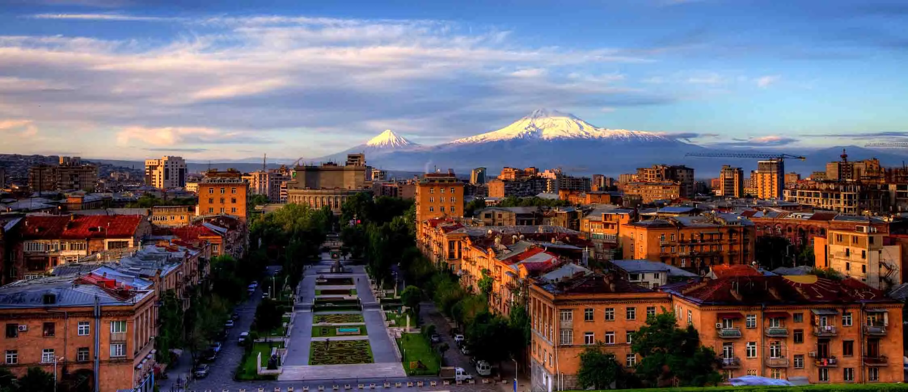
ՏՎՅԱԼՆԵՐ
Ուղղություն
Հյուսիսից
Հյուսիս-արևելքից
Հյուսիս-արևմուտքից
Արևմուտքից
Հարավից
Հարավ-արևմուտքից
Սահմանակից մարզ
Կոտայք
Կոտայք
Արագածոտն
Արմավիր
Արարատ
Արարատ
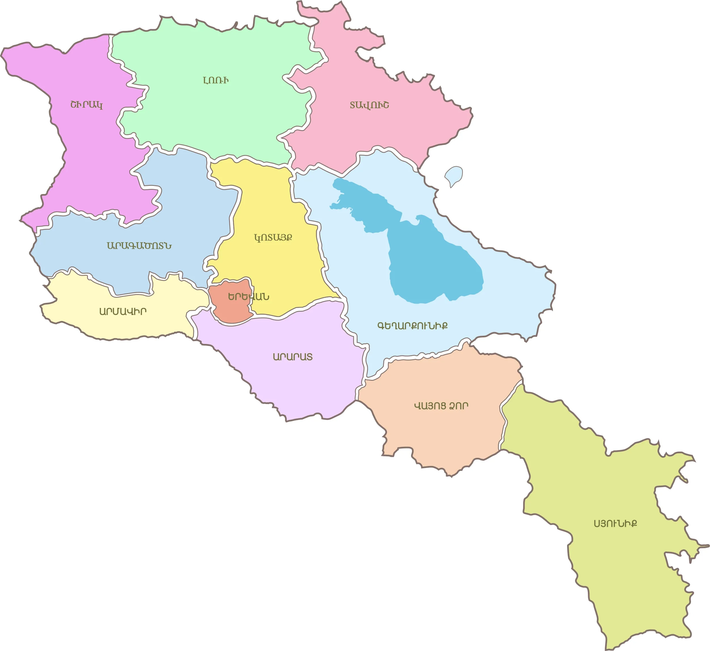
Հիմնադրումը
Երևանը հիմնադրվել է մ.թ.ա. 782 թվականին՝ Էրեբունի ամրոցի կառուցմամբ։
Տարածքը
223 կմ² – 227 կմ² (կամ մոտ 22,700 հա) (≈ 0.75% ՀՀ տարածքի)
Մայրաքաղաք
Երևանը Հայաստանի Հանրապետության մայրաքաղաքն է և երկրի ամենամեծ քաղաքը։ Գտնվում է Արարատյան դաշտում՝ Հրազդան գետի երկայնքով։ Քաղաքը աշխարհի հնագույն շարունակաբար բնակեցված քաղաքներից է։ Պատմական Հայաստանի 12-րդ մայրաքաղաքը՝ Էրեբունի ամրոցից սկսված, դարերի ընթացքում անցել է պատմական զարգացում և 20-րդ դարում դարձել է Հայաստանի քաղաքական, տնտեսական և մշակութային գլխավոր կենտրոնը։
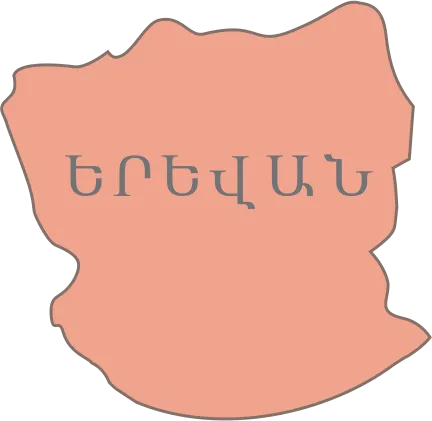
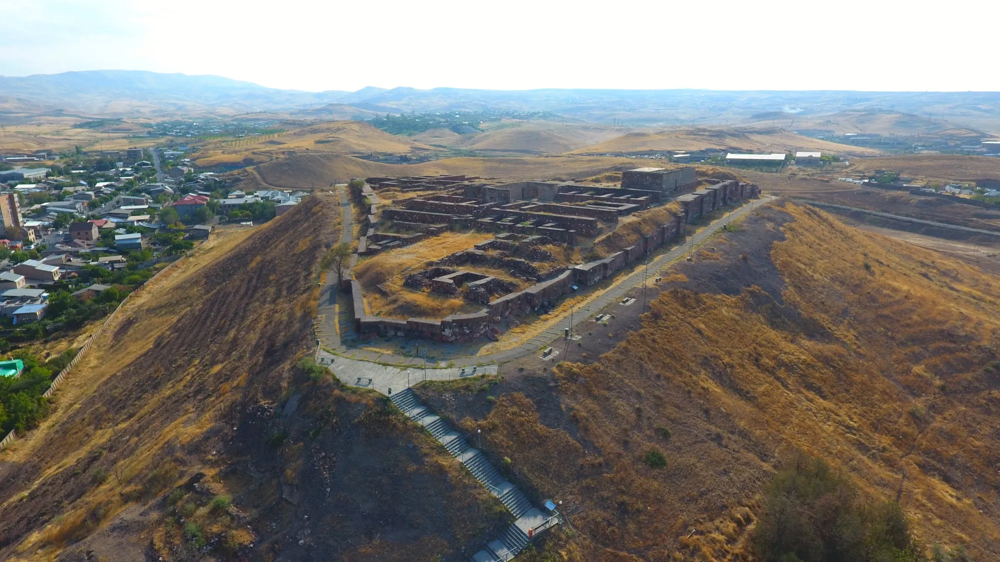
Ցուցիչ
Տարածք
Կենտրոնական կոորդինատներ
Տարածքային կոորդինատներ
Բարձրություն
Վարչական շրջաններ
Բնակչություն
Հիմնադրվել է
Քաղաքի կարգավիճակ
Մայրաքաղաքի կարգավիճակ
Հեռախոսային կոդեր
Փոստային դասիչ
Զանգերի սպասարկման բաժին
Թեժ գիծ
Վեբ կայք
Տվյալ
223 կմ ² - 227 կմ² կամ մոտ 22.700 հա
40°10′53″N 44°30′52″E
40° 04՛–40° 14՛ հս.լ., 44° 23' – 44° 37' ավ.ե
850 - 1300 մ.
Աջափնյակ, Ավան, Արաբկիր, Դավթաշեն, Էրեբունի, Կենտրոն, Մալաթիա-Սեբաստիա, Նոր Նորք, Նորք-Մարաշ, Նուբարաշեն, Շենգավիթ, Քանաքեռ-Զեյթուն
≈ 1,075,100 մարդ
մ.թ.ա. 782 թ. (Էրեբունի ամրոց)
1879թ․ հոկտեմբերի 1
1918թ.հուլիսի 19 (փաստացի)
+374 (10), +374 (60), +374 (11)
0001-0099
1-05
https://www.yerevan.am/am/hot-line/
https://www.yerevan.am/am/
Երևանի քաղաքապետարան
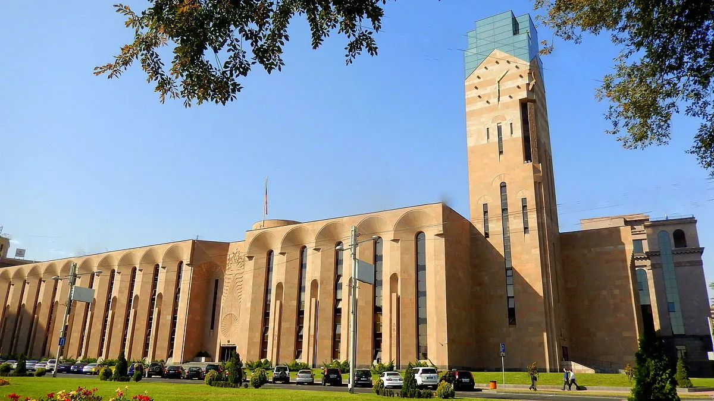
Հասցե
Վեբ կայք
էլ. հասցե
Հեռ.
Թեժ գիծ
ք.Երևան, Արգիշտիի փող. 1
https://www.yerevan.am
info@yerevan.am
(374 11) 514-000
1-05
Արտակարգ իրավիճակ
ԱԻՆ
Ոստիկանություն
Շտապ բուժօգնության ծառայություն
Գազի վթարային ծառայություն
Թեժ գծեր
101, 911, 112, 108
102
103
104
Վարչական շրջանների թաղապետարաններ
Աջափնյակ
Ավան
Արաբկիր
Դավթաշեն
Էրեբունի
Կենտրոն
Մալաթիա-Սեբաստիա
Նոր Նորք
Նորք-Մարաշ
Նուբարաշեն
Շենգավիթ
Քանաքեռ-Զեյթուն
+(374 11) 518-024
+(374 11) 518-108
+(374 11) 518-201
+(374 11) 518-281
+(374 11) 518-331
+(374 11) 518-401
+(374 11) 518-585
+(374 11) 518-686
+(374 11) 518-710
+(374 11) 518-737
+(374 11) 518-801
+(374 11) 518-844
ԻՆՉՊԵՍ ՀԱՍՆԵԼ
Ինչպես հասնել Երևան արտերկրից
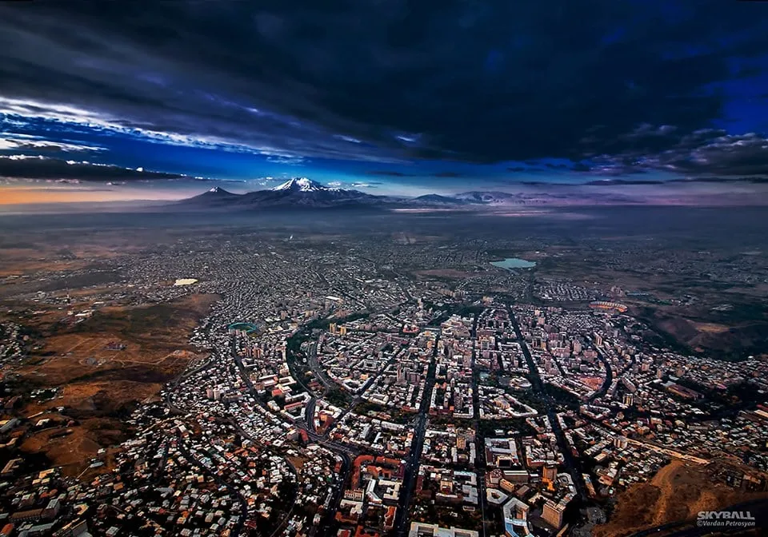
Օդային տրանսպորտ
Ավիացիան տուրիզմում ամենաարագ և հարմարավետ փոխադրման միջոցներից է։ Թռիչքների ընթացքում մատուցվող ծառայությունները նույնպես գրավում են զբոսաշրջիկներին, իսկ միջազգային ամրագրման համակարգերը նպաստում են ավիատոմսերի լայն տարածմանը։ Ավիաընկերությունները միջազգային ամրագրման ցանցերի միջոցով տուրիստական գործակալություններին վճարում են միջնորդավճարներ ամեն վաճառված տոմսի համար, դրանով իսկ նրանց շահագրգռելով ընտրել փոխադրման այս ձևը
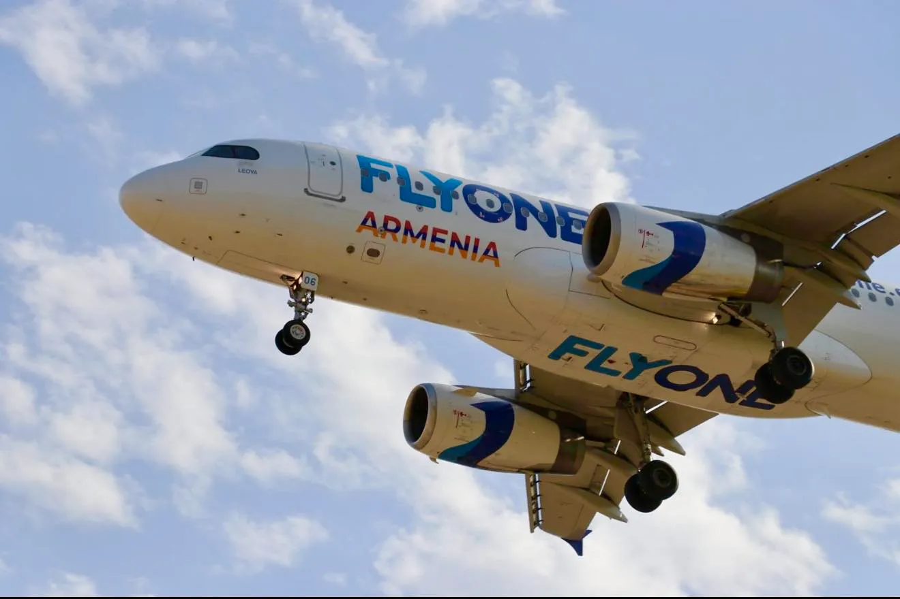
Հայկական օդանավակայաններ
Երևանը միջազգային օդային կապ ունի «Զվարթնոց» միջազգային օդանավակայանի միջոցով, որը Հայաստանի գլխավոր օդային դարպասն է: Օդանավակայանը գտնվում է Երևանից մոտ 10 կմ հեռավորության վրա։ Օդանավակայանի աերոդրոմի վազքուղու չափերը կազմում են՝ 3850×56մ: Օդանավակայանը համապատասխանում է միջազգային «4D» չափանիշներին և ապահովում է ժամանակակից նավիգացիոն ու անվտանգ վայրէջքային համակարգեր։
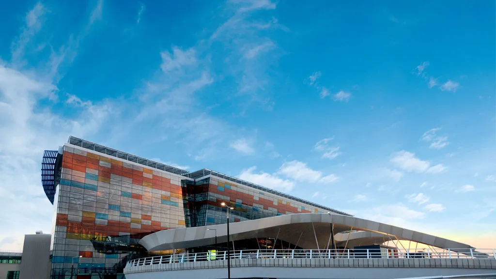
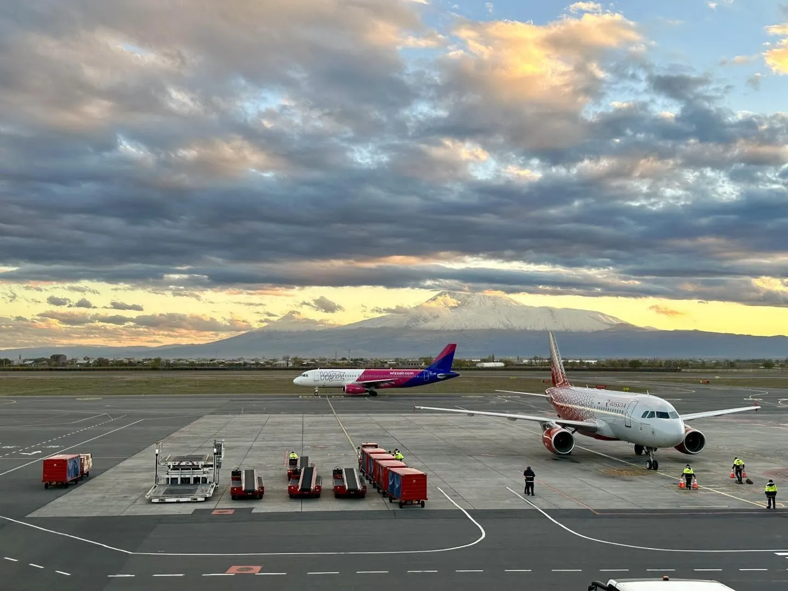
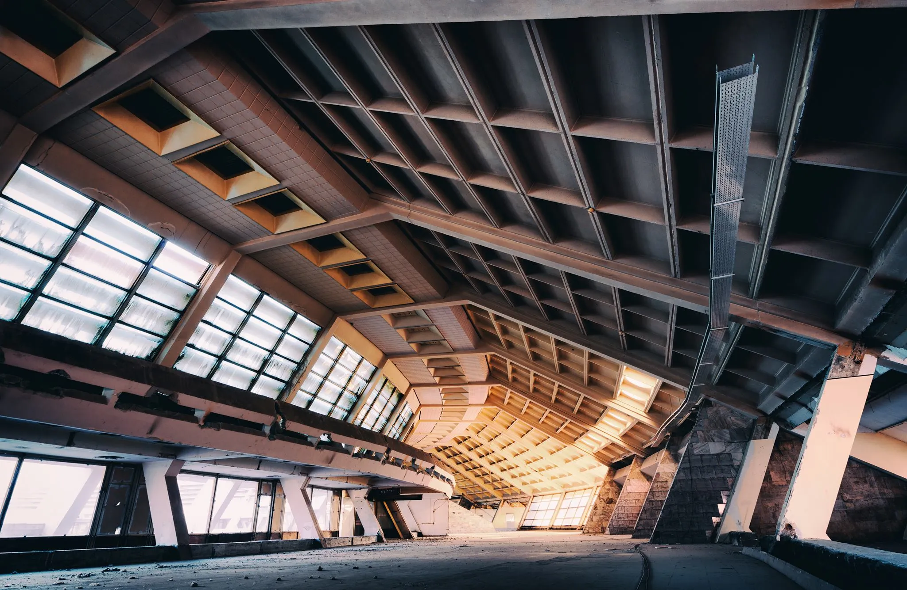
Երկրի երկրորդ միջազգային օդանավակայանը Շիրակ միջազգային օդանավակայանն է, որը գտնվում է Գյումրի քաղաքից 5 կմ հեռավորության վրա և սպասարկում է ինչպես կանոնավոր, այնպես էլ սեզոնային միջազգային ավիաչվերթներ։ Օդանավակայանի աերոդրոմի վազքուղու չափերն են՝ 3220×45մ: Միջազգային չափանիշերին համաձայն աերոդրոմը համապատասխանում է «4D» դասին:
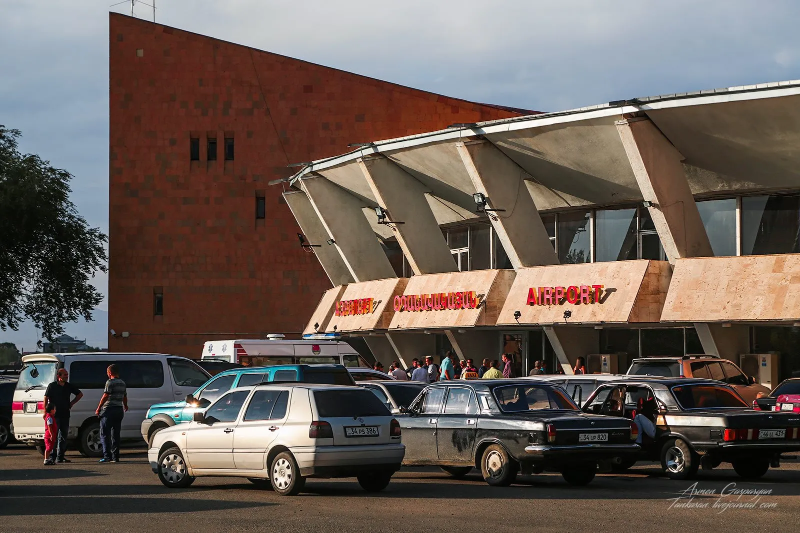
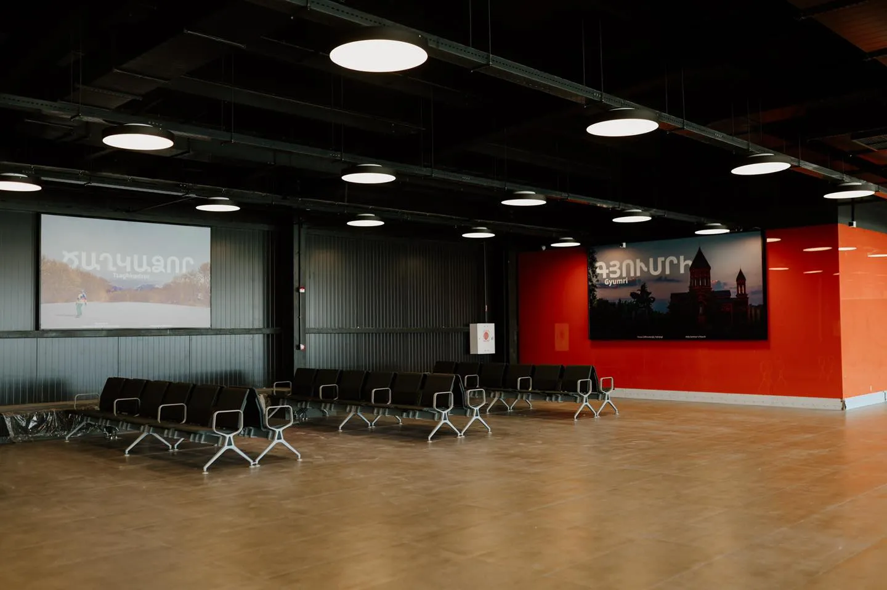
Այս պահին դեպի Երևան և Գյումրի չվերթներ իրականացնող հիմնական ավիաընկերություններն են՝
- Aegean Airlines
- Aeroflot
- Air Arabia
- Air Cairo
- Air France
- Armenia Airways
- Armenian Airlines
- Austrian Airlines
- Azimuth
- Belavia
- Brussels Airlines
- Caspian Airlines
- China Southern Airlines
- Condor
- Eurowings
- Fly Cham
- Fly Dubai
- Fly Kish
- FlyOne Armenia
- FlySepehran
- Georgian Airways
- Iran Airtour
- Jazeera
- LOT Polish Airlines
- Lufthansa
- Middle East Airlines
- NovAir
- Pegasus Airlines
- Pobeda
- Qatar Airways
- Qeshm Air
- Red Sea Airlines
- Red Wings
- Rossiya Airlines
- S7 Airlines
- SalamAir
- Shirak Avia
- SkyUp Airlines
- Transavia Airlines
- Turkish Airlines
- Ural Airlines
- UTair
- Wizz Air
- Yazd Airlines
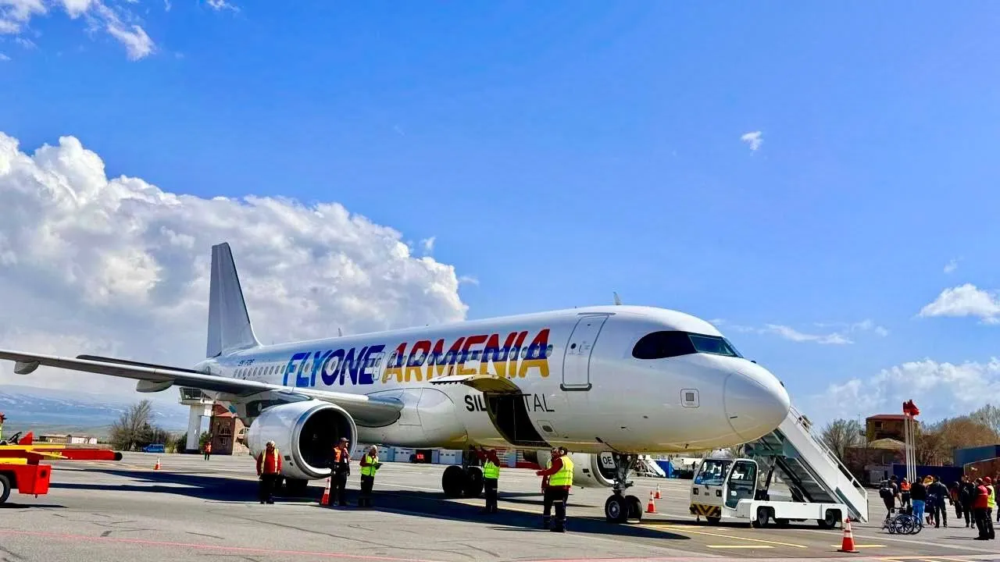
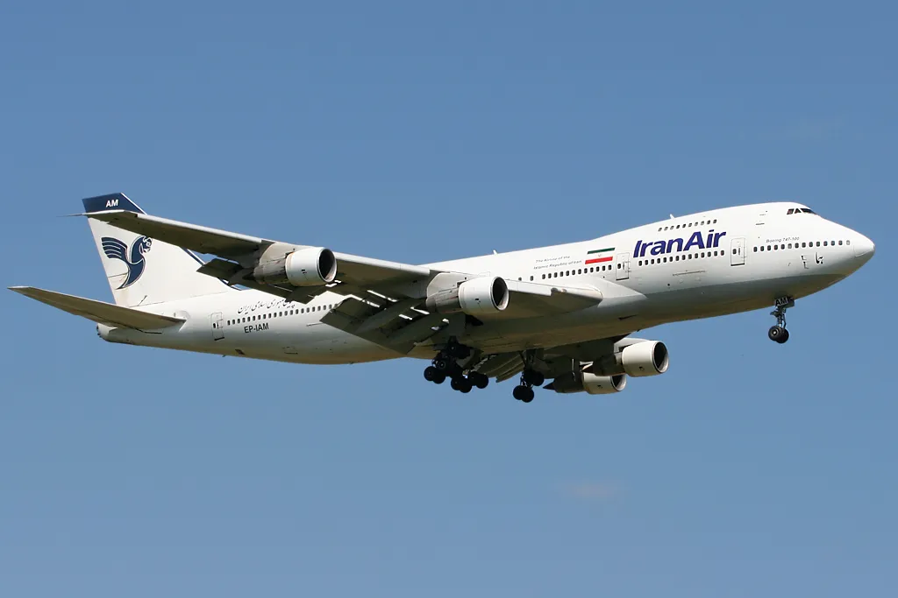
Հետադարձ կապ
Նամակ ուղարկել ՝ ՀՀ, ք. Երևան 0042, Զվարթնոց միջազգային օդանավակայան, ԱՄՕ շենք իրավաբանական հասցեին, կամ correspondence@aia-zvartnots.aero էլեկտրոնային հասցեին:
Զանգերի կենտրոն՝
1-87 (տեղական զանգերի համար)
Տեղեկատու հեռախոսահամար (24/7)
+374-10-493111
Միջազգային զանգերի համար (24/7)
+374-10-493000 (10:00-19:00)
Երկաթուղի
Երևանը ունի միջազգային և տարածաշրջանային երկաթուղային կապեր (հիմնականում Վրաստանի ուղղությամբ)։ Հայաստանի երկաթուղային համակարգի կառավարումը 2008թ.-ից իրականացնում է «Հարավկովկասյան երկաթուղի» ՓԲԸ, որը նախկինում հայտնի էր որպես Հայկական երկաթուղի և հանդիսանում է Ռուսական երկաթուղիներ ընկերության դուստր կազմակերպությունը։ «Հարավկովկասյան երկաթուղի» ՓԲԸ-ի («ՀԿԵ») շահագործվող գծերի երկարությունը կազմում է շուրջ 726 կմ։ «ՀԿԵ»-ն իրականացնում է ուղևորափոխադրումներ և բեռնափոխադրումներ՝ կապելով Հայաստանի տարբեր քաղաքները և ապահովելով միջազգային երկաթուղային հաղորդակցություն։
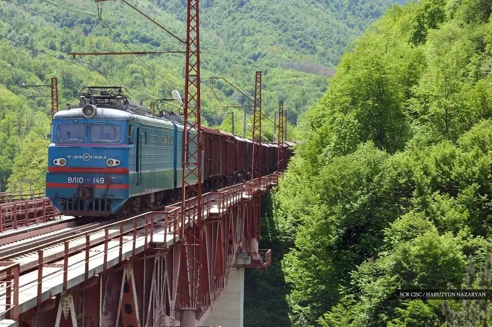
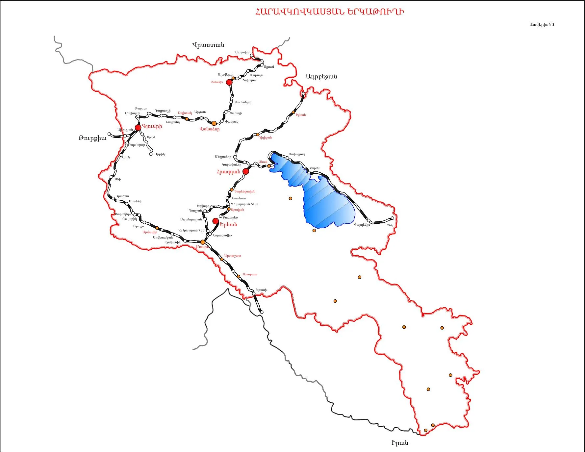
Երևանի «Սասունցի Դավիթ» կայարան
Երևանի երկաթուղային կայարանը հիմնադրվել է 1956 թ.: Գտնվում է Սասունցի Դավիթ հրապարակում։ Կայարանը գործում է շուրջօրյա, ունի հարմարավետ սպասասրահներ՝ VIP սենյակով, Wi-Fi, բանկոմատով, հյուրանոցային ամրագրման, զբոսաշրջային տեղեկատվության ծառայություններով։ Հայաստանի գլխավոր երկաթուղային ցանցը կապում է Երևանը որոշ մարզերի և սահմանային ուղղությունների հետ։
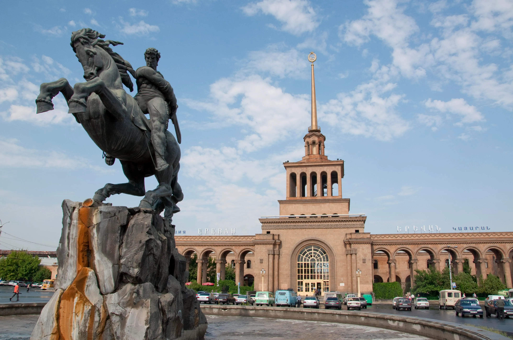
Չվերթները
- Երևան–Թբիլիսի–Երևան
- Երևան–Բաթումի–Երևան՝ «Արմենիա» ֆիրմային գնացքով (սեզոնային)
- Երևան–Գյումրի–Երևան՝ ժամանակակից, արագընթաց էլեկտրագնացքով
Ժամանակակից արագընթաց գնացքները նպաստում են նաև մարզերի ակտիվացմանը։ Այս գնացքները հարմարեցված են սահմանափակ ֆիզիկական հնարավորություններ ունեցող ուղևորների համար և ապահովված են օդափոխման, հակահրդեհային և անվտանգության համակարգերով։
Հասցե՝ Երևան, Տիգրան Մեծի պող. 86
Տոմսարկղ՝ (+374 60) 46 32 84
Սերվիս կենտրոն՝ (+374 60) 46 32 83
Տնօրինություն՝ 060 46 34 32
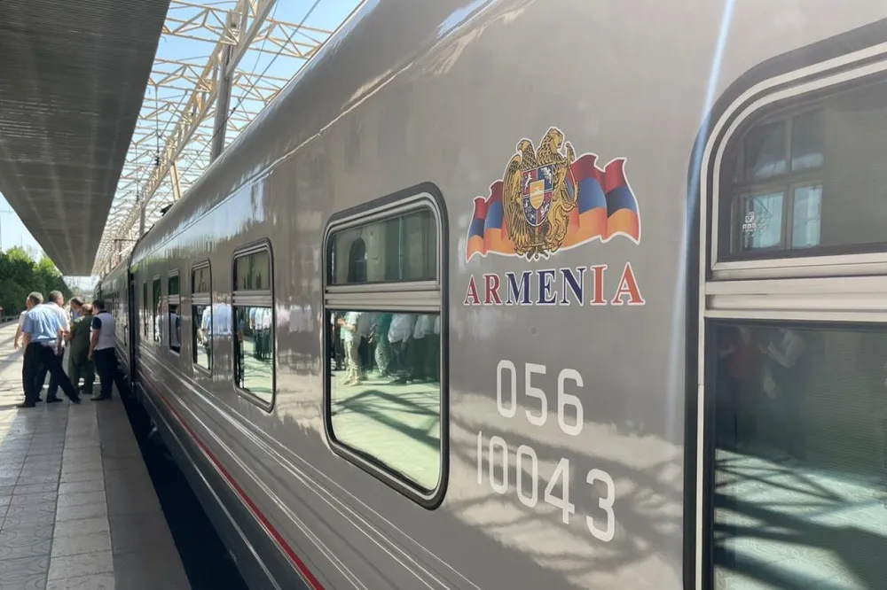
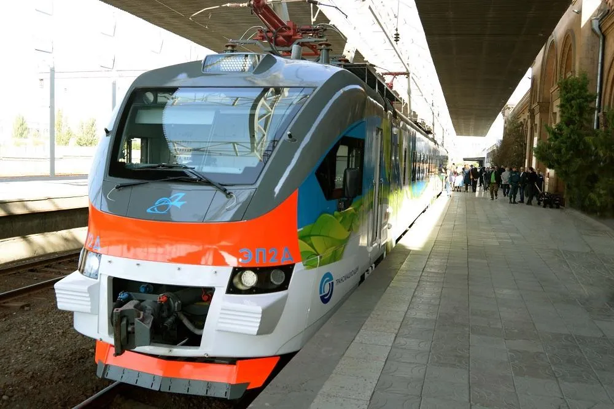
Ավտոճանապարհներ
Երևանը Հայաստանի գլխավոր տրանսպորտային հանգույցն է և միջազգային ավտոմայրուղիներով կապված է հարևան Վրաստանի և Իրանի հետ։ Հայաստանի ճանապարհային ցանցը կարևոր դեր ունի երկրի ներքին և արտաքին հաղորդակցության մեջ՝ ապահովելով կապը մարզերի, սահմանային անցակետերի և զբոսաշրջային կենտրոնների միջև։
Հայաստանում գործում են ավտոմոբիլային ճանապարհների երեք հիմնական կարգեր՝
- միջպետական ավտոճանապարհներ
- հանրապետական նշանակության ճանապարհներ
- տեղական (մարզային) ճանապարհներ
Միջպետական ավտոճանապարհներ
ՀՀ միջպետական ավտոճանապարհների ընդհանուր երկարությունը կազմում է շուրջ 1,761 կմ։ Այս ճանապարհները կապում են Հայաստանի ճանապարհային ցանցն այլ պետությունների ճանապարհներին և ապահովում են միջազգային տրանսպորտային հաղորդակցություն: «Հյուսիս–Հարավ» ավտոմայրուղային նախագիծը նախատեսում է ժամանակակից ճանապարհային միջանցքով կապել երկրի հարավը և հյուսիսը՝ բարելավելով միջազգային տարանցիկ հաղորդակցությունը։
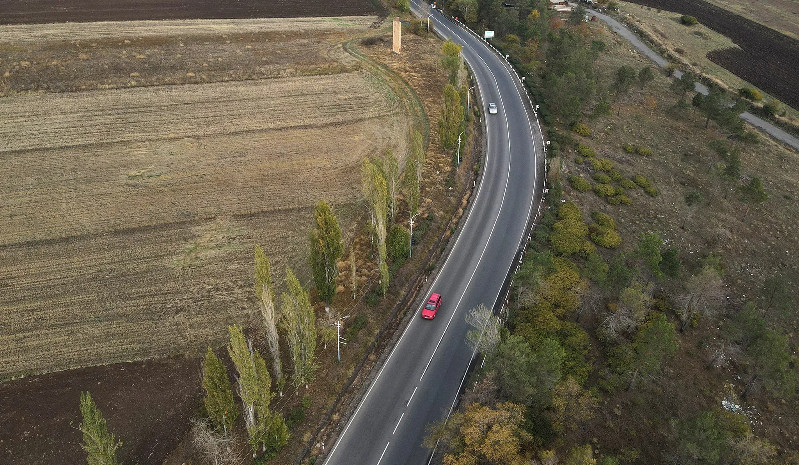
ՀՀ միջպետական նշանակության խոշոր ճանապարհները
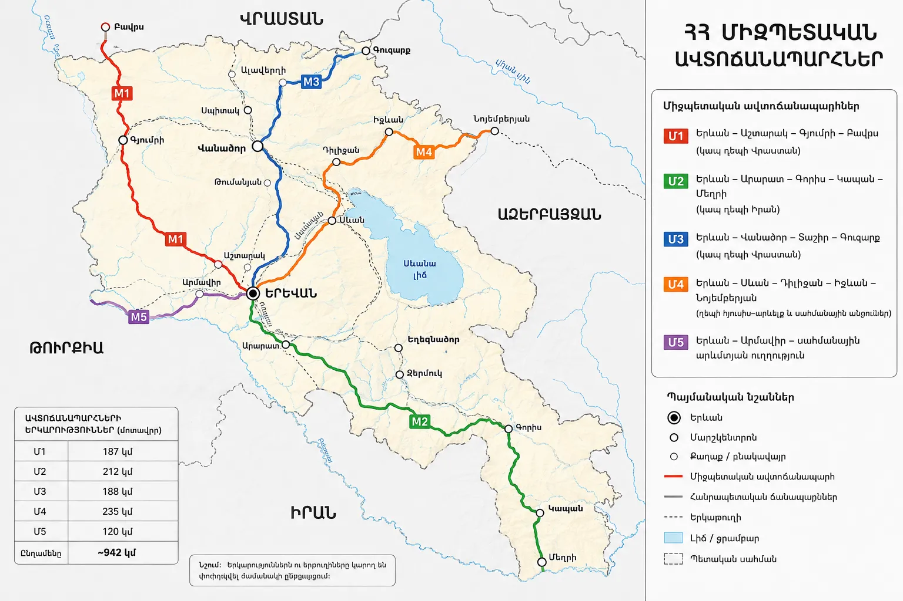
- Մ-1 Երևան - Գյումրի - Վրաստանի սահման (173. կմ)
- Մ-2 Երևան - Երասխ - Գորիս - Մեղրի - Իրանի սահման (384,3. կմ)
- Մ-3 ՀՀ -Թուրքիա պետական սահման -Մարգարա - Վանաձոր - Տաշիր - ՀՀ – Վրաստան պետական սահման (Գոգավան) (183.7 կմ)
- Մ-4 Երևան - Սևան - Իջևան - Ադրբեջանի սահման (162 կմ)
- Մ-5 Երևան – Արմավիր – Թուրքիայի սահման (64.9 կմ)
- Մ-6 Վանաձոր - Ալավերդի - Վրաստանի սահման (Բագրատաշեն) (91,2 կմ)
Երևանով անցնում են Մ-1, Մ-2, Մ-4 և Մ-5 ճանապարհները
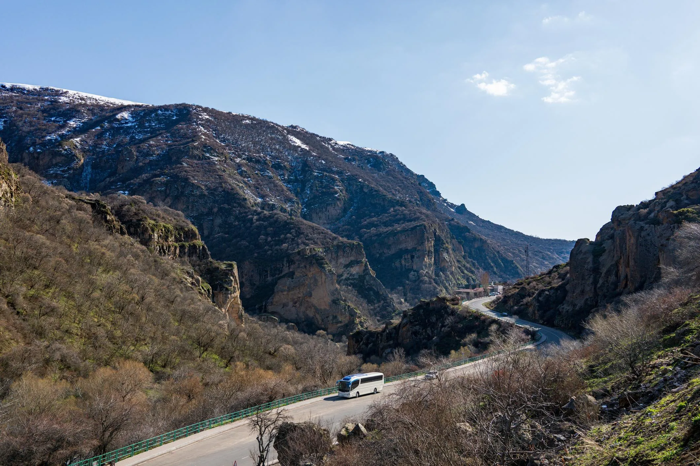
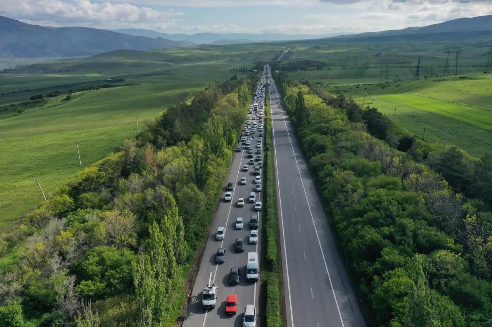
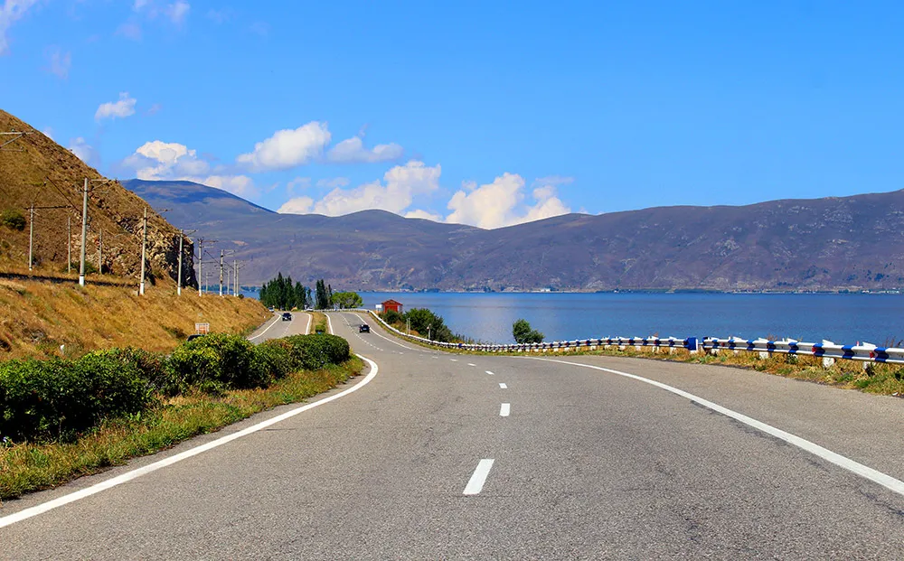
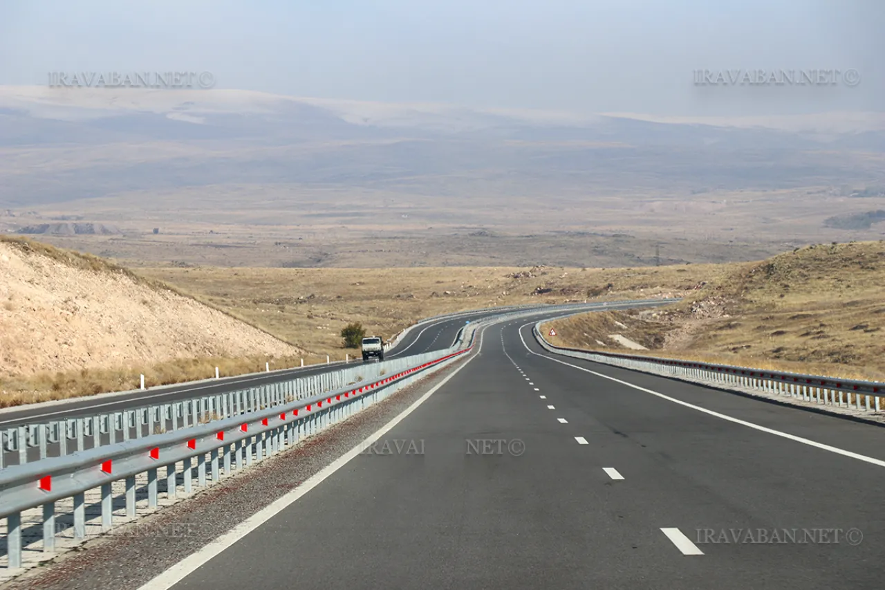

Հանրապետական նշանակության ավտոմայրուղիներ
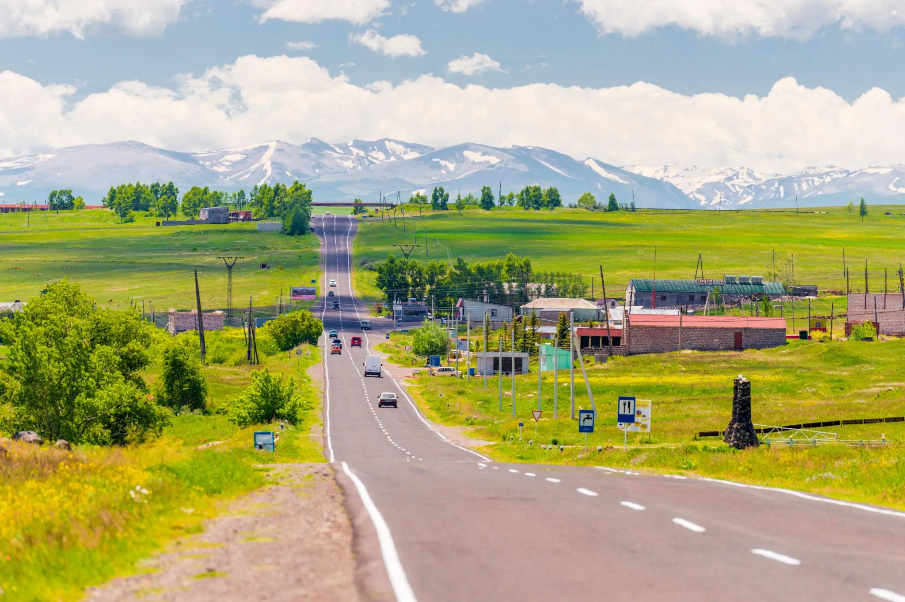
Երևանը Հայաստանի բոլոր մարզերի հետ կապված է գլխավոր ավտոճանապարհներով։ Հանրապետական նշանակության ավտոմոբիլային ճանապարհները կապում են հանրապետության քաղաքները մայրաքաղաքի և միմյանց, մշակութային, հոգևոր կենտրոնների և միջպետական նշանակության ավտոմոբիլային ճանապարհների հետ։ Այս տեսանկյունից Հայաստանն ունի 84 հանրապետական նշանակության ճանապարհ, որոնք դասակարգվում են օրենքով նախատեսված կարգով։ Համաձայն օրենքի՝ հանրապետական նշանակության ճանապարհների անվանումները սկսվում են «Հ» («H») տառով։ ՀՀ ամբողջ ավտոճանապարհային ցանցի (ներառյալ հանրապետական և տեղական նշանակության ուղիները) ընդհանուր երկարությունը կազմում է շուրջ 7,533 կմ :
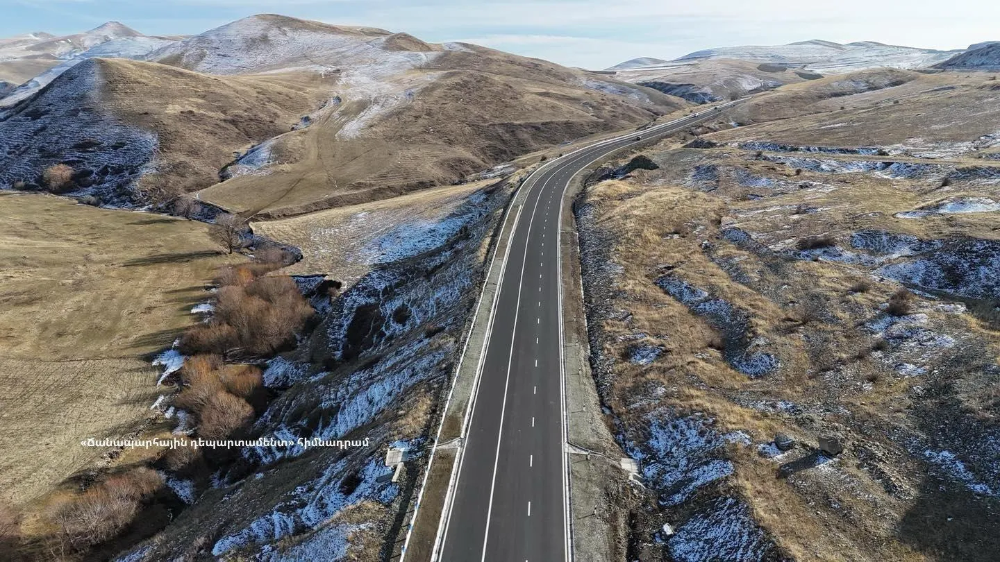
Ճանապարհային համակարգը ներառում է լեռնային և հարթավայրային ճանապարհներ, կամուրջներ, թունելներ և ռազմավարական լեռնանցքներ, որոնք ապահովում են անվտանգ և արագ երթևեկություն տարվա բոլոր եղանակներին։
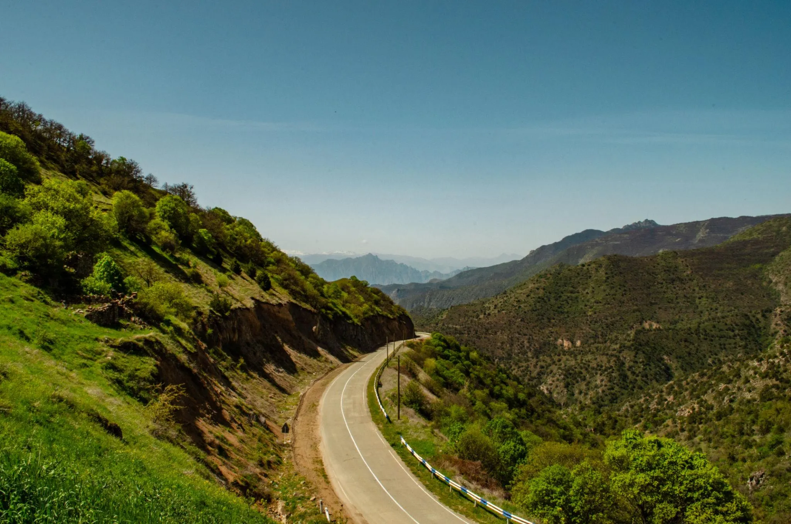
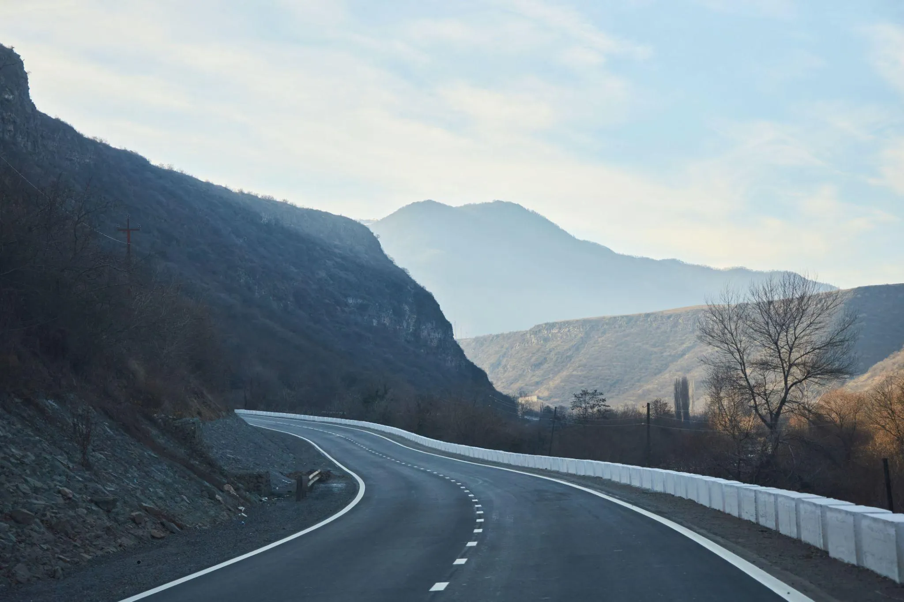
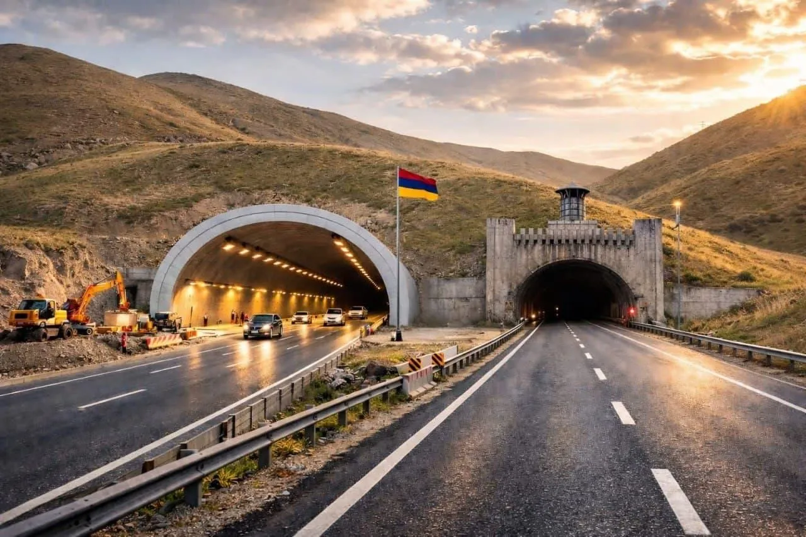
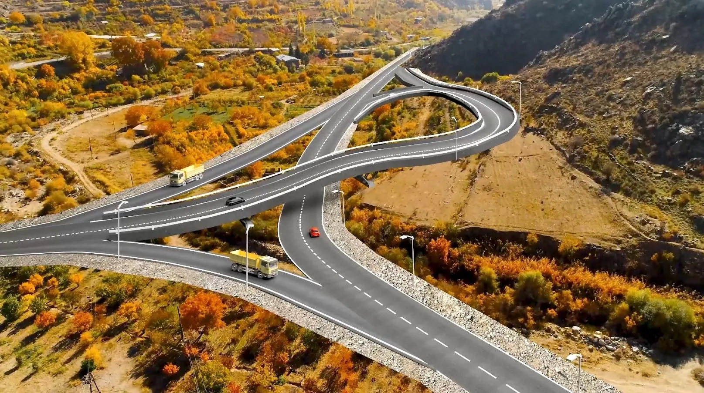
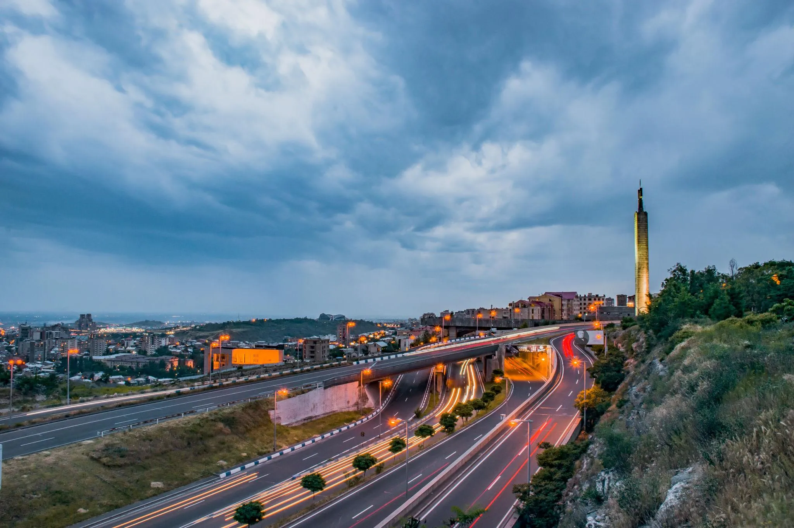
Ինչպես հասնել Երևան ՀՀ մարզերից
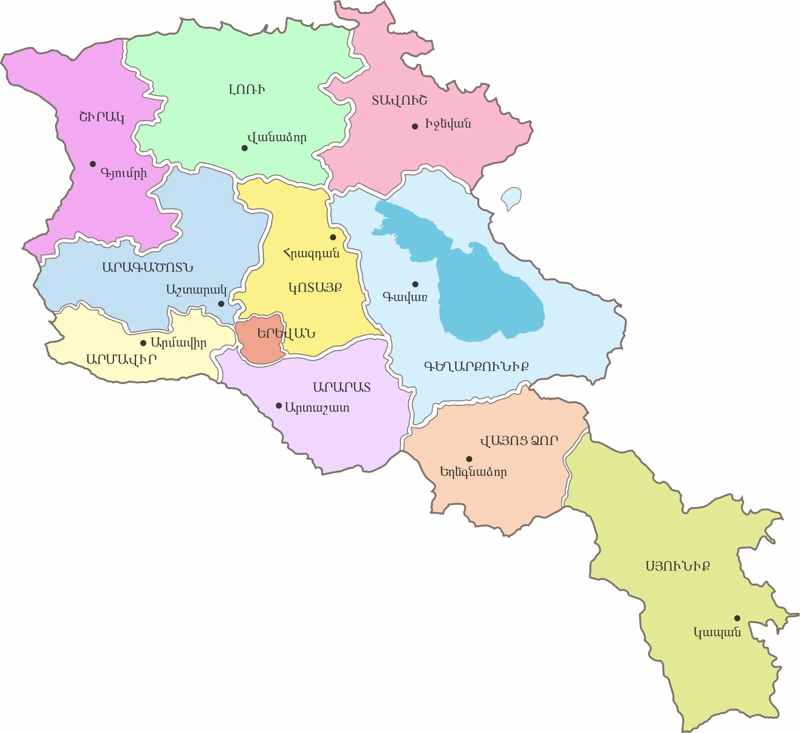
Արագածոտնի մարզ → Երևան
- Երևանին միանում է հիմնականում Աշտարակի մայրուղով
- Հիմնական ճանապարհներ՝ Մ-1, Մ-3 և Հյուսիս–Հարավ մայրուղի
- Երևան կարելի է հասնել ավտոբուսով, երթուղայինով կամ տաքսիով
- Ճանապարհը Աշտարակից՝ մոտ 40 րոպե
- Տոմսը՝ մոտ 250 դրամ
- Մարզով անցնում է ՀՀ գլխավոր երկաթուղու մի հատվածը։
Արարատի մարզ → Երևան
- Մարզով անցնում է Երևան–Երասխ հանրապետական մայրուղին
- Երևան կարելի է հասնել ավտոբուսով, երթուղայինով, միկրոավտոբուսով կամ գնացքով
- Երևան–Արտաշատ ճանապարհը՝ մոտ 1 ժամ 10 րոպե
- Ավտոբուսի տոմսերը՝ մոտ 200–500 դրամ
- Մարզով անցնում է Երևան–Երասխ երկաթուղին, գործում են ամենօրյա էլեկտրագնացքներ։
Արմավիրի մարզ → Երևան
- Մարզը Երևանին միանում է հիմնականում Մ-5 ավտոմայրուղով
- Մ-3 ճանապարհը մարզը կապում է նաև հյուսիսային Հայաստանի հետ
- Երևան կարելի է հասնել ավտոբուսով, երթուղայինով կամ գնացքով
- Արմավիր–Երևան ճանապարհը տևում է մոտ 50 րոպե
- Տոմսի արժեքը՝ մոտ 350 դրամ։
Գեղարքունիքի մարզ → Երևան
- Մարզով անցնում են Մ-4, Մ-10, Մ-14 և Երևան–Սևան–Դիլիջան մայրուղիները
- Երևան կարելի է հասնել ավտոբուսով, երթուղայինով կամ սեզոնային էլեկտրագնացքով:
- Գավառ–Երևան ճանապարհը տևում է մոտ 2 ժամ
- Տոմսի արժեքը՝ մոտ 1100 դրամ
- Սևանը Երևանին միանում է երկաթուղով, ուղևորությունը տևում է մոտ 1 ժամ 25 րոպե։
Լոռու մարզ → Երևան
- Մարզով անցնում են դեպի Վրաստան տանող հիմնական միջպետական մայրուղիները
- Երևան–Վանաձոր ճանապարհը տևում է մոտ 1 ժամ 45 րոպե
- Երևան կարելի է հասնել ավտոբուսով, երթուղայինով կամ գնացքով
- Տոմսի արժեքը՝ մոտ 800–1200 դրամ
- Մարզով անցնում է նաև Թբիլիսի–Երևան երկաթուղին։
Կոտայքի մարզ → Երևան
- Մարզով անցնում է Մ-4 Երևան–Հրազդան–Սևան մայրուղին
- Երևան–Հրազդան ճանապարհը տևում է մոտ 40–50 րոպե
- Երևան կարելի է հասնել ավտոբուսով, երթուղայինով, միկրոավտոբուսով կամ էլեկտրագնացքով
- Տոմսի արժեքը՝ մոտ 300–700 դրամ
- Մարզով անցնում է Երևան–Հրազդան–Սևան երկաթուղին, գործում են նաև սեզոնային էլեկտրագնացքներ դեպի Սևանա լիճ։
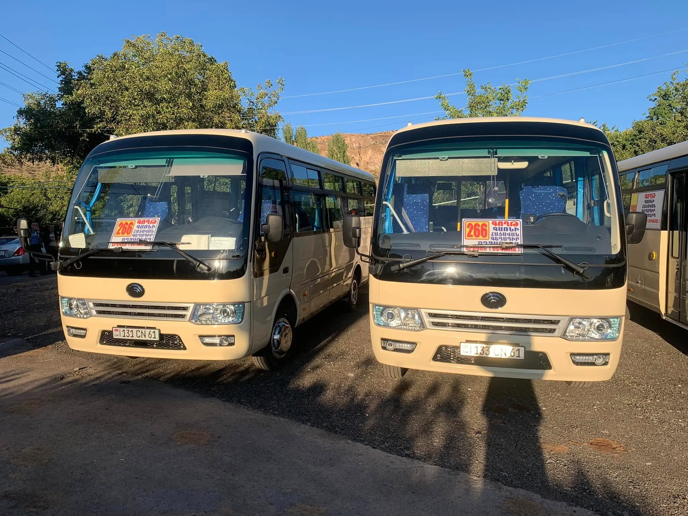
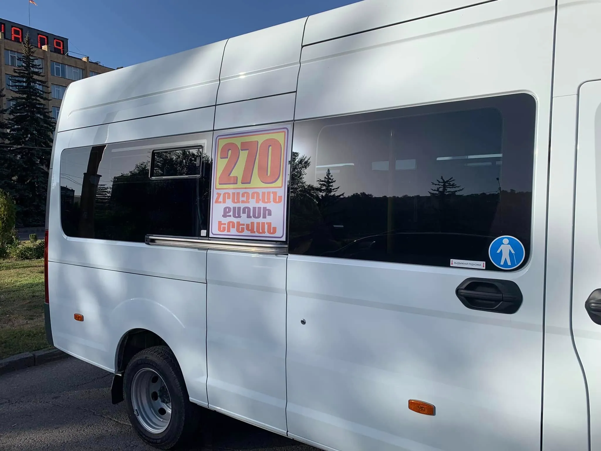
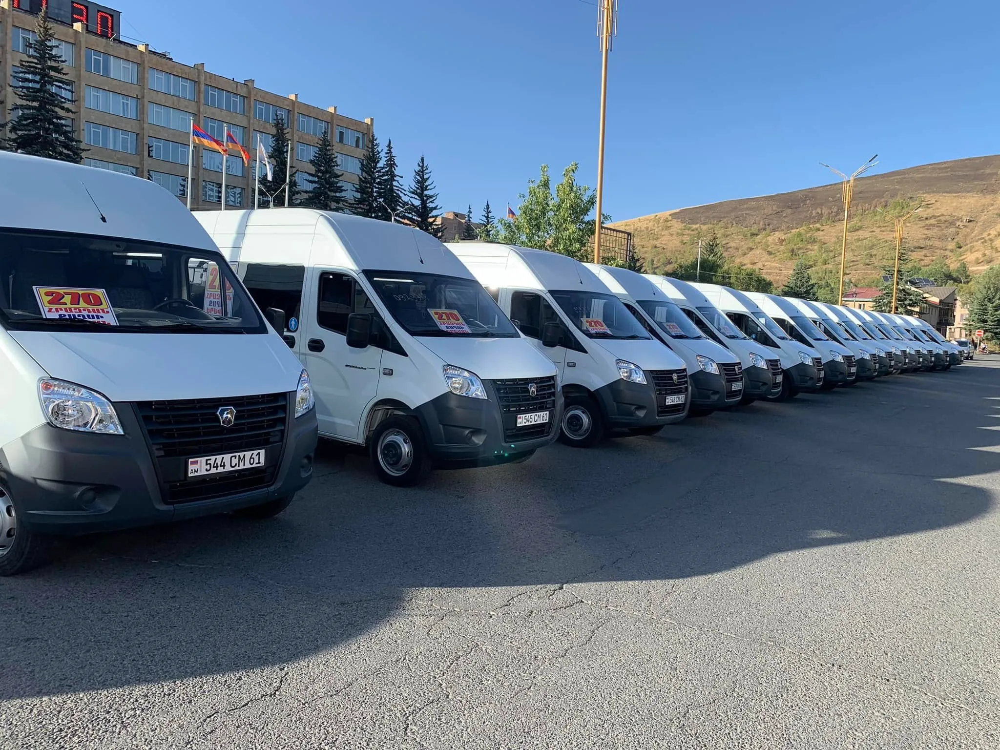
Շիրակի մարզ → Երևան
- Մարզով անցնում են Մ-1, Մ-3 և Հյուսիս–Հարավ գլխավոր մայրուղիները
- Երևան–Գյումրի ճանապարհը տևում է մոտ 2 ժամ
- Երևան կարելի է հասնել ավտոբուսով, երթուղայինով կամ միկրոավտոբուսով կամ էլեկտրագնացքով:
- Տոմսի արժեքը՝ մոտ 1500 դրամ։
Սյունիքի մարզ → Երևան
- Մարզով անցնում է Մ-2 Երևան–Գորիս–Կապան–Մեղրի միջպետական մայրուղին
- Երևան–Կապան ճանապարհը տևում է մոտ 8 ժամ
- Երևան կարելի է հասնել երթուղայինով, միկրոավտոբուսով, տաքսիով և օդային ճանապարհով
- Տոմսի արժեքը՝ մոտ 7000 դրամ
- Կապանի օդանավակայանը սպասարկում է ներքին չվերթներ Երևան–Սյունիք ուղղությամբ։
Վայոց ձորի մարզ → Երևան
- Մարզով անցնում է Մ-2 Երևան–Արտաշատ–Եղեգնաձոր–Վայք–Մեղրի մայրուղին
- Երևան–Եղեգնաձոր ճանապարհը տևում է մոտ 1 ժամ 45 րոպե
- Երևան կարելի է հասնել երթուղայինով կամ տաքսիով
- Տոմսի արժեքը՝ մոտ 1200 դրամ
- Կապանի օդանավակայանը սպասարկում է ներքին չվերթներ Երևան–Սյունիք ուղղությամբ։
Մարզը կապվում է հարևան մարզերի հետ լեռնանցքային ճանապարհներով (Սելիմի, Որոտանի և Զովաշենի)։
Տավուշի մարզ → Երևան
- Մարզը Երևանին միանում է հիմնականում Մ-4 մայրուղով (Երևան–Սևան–Դիլիջան–Իջևան)
- Երևան–Իջևան ճանապարհը տևում է մոտ 2–3 ժամ
- Երևան կարելի է հասնել ավտոբուսով, երթուղայինով, տաքսիով կամ միկրոավտոբուսով
- Տոմսի արժեքը՝ մոտ 1500 դրամ
- Դիլիջան–Երևան ճանապարհը՝ մոտ 1.5–2 ժամ
Մարզում երկաթուղային կայարան ներկայումս չի գործում, սակայն տարածքով անցնում է Երևան–Թբիլիսի երկաթուղու հատվածը։
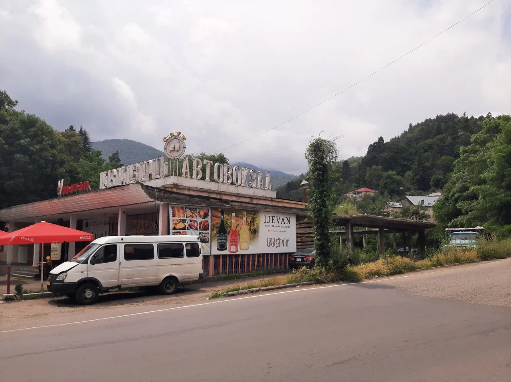
ԿԼԻՄԱ
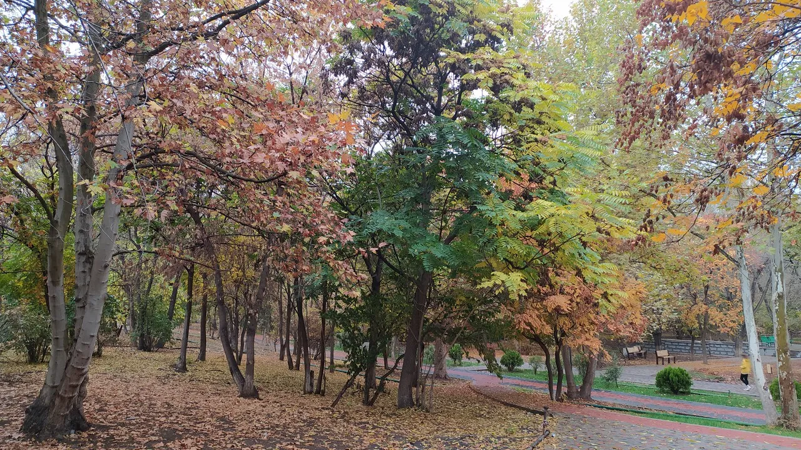
Երևանը գտնվում է բարեխառն գոտում՝ ցամաքային կլիմային բնորոշ հատկանիշերով։ Դրա շնորհիվ այստեղ պարզ արտահայտվում են տարվա բոլոր չորս եղանակները։ Երևանի կլիման բնութագրվում է զով ձմեռներով և շոգ ամառներով: Ձմռան ամիսները ցուրտ են, բայց ոչ ձնառատ: Ամռանը՝ շոգ և չոր: Գարունը՝ փոփոխական է և ծաղկուն: Աշունը մեղմ է ու երկարատև: Միջին ջերմաստիճանը տատանվում է 22°C- ից (77.6 F) մինչև 36 °C (96.8 F): Երեկոները զով են ու թարմացնող:
Կլիմայի առանձնահատկություններ
Երևանում կլիման կիսաչոր է (Köppen՝ BSk)՝ ցամաքային բնույթով։ Տարվա ընթացքում եղանակները հստակ տարբերվում են՝ ստեղծելով բազմազան ու փոփոխական միջավայր։
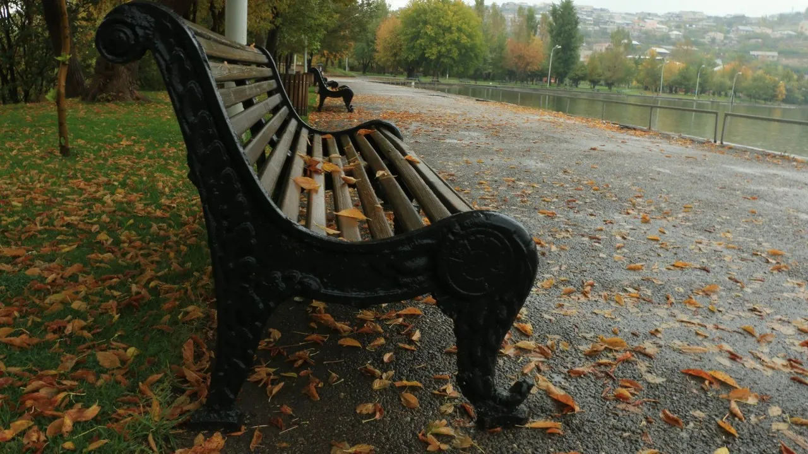
Եղանակների բնութագիր
Ձմեռ
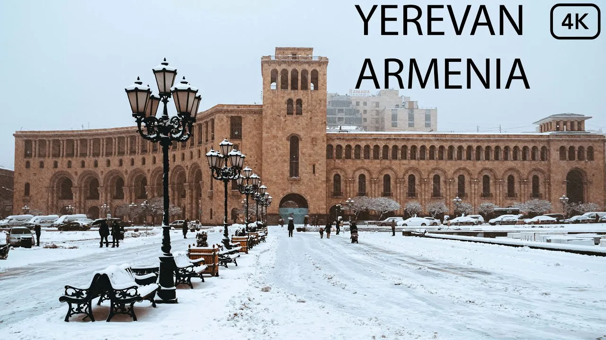
Ձմեռները համեմատաբար ցուրտ են, երբեմն՝ մինչև -10°C, սակայն ձյունը հազվադեպ է և երկար չի պահպանվում։ Քաղաքը ձմռանը հաճախ լուսավորվում է տոնական ձևավորումներով՝ ստեղծելով ջերմ մթնոլորտ։
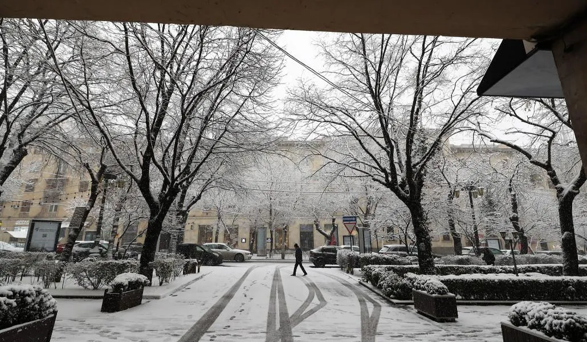
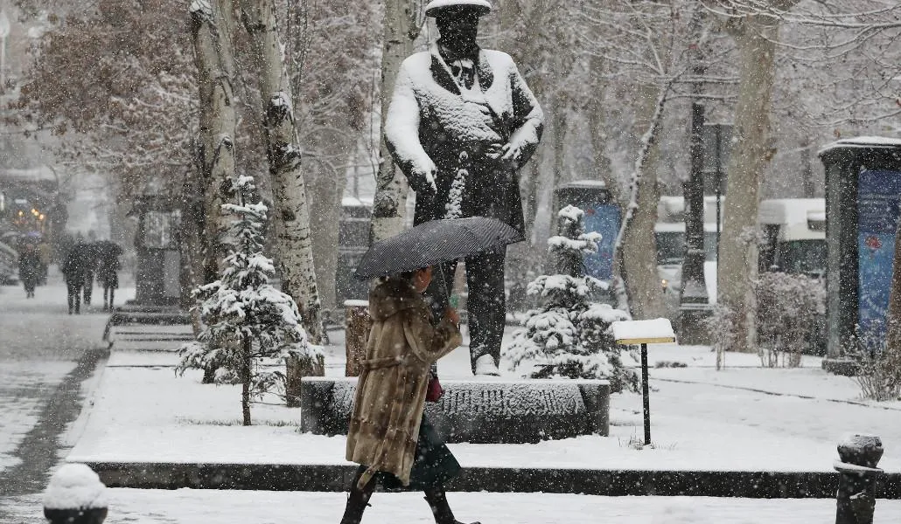
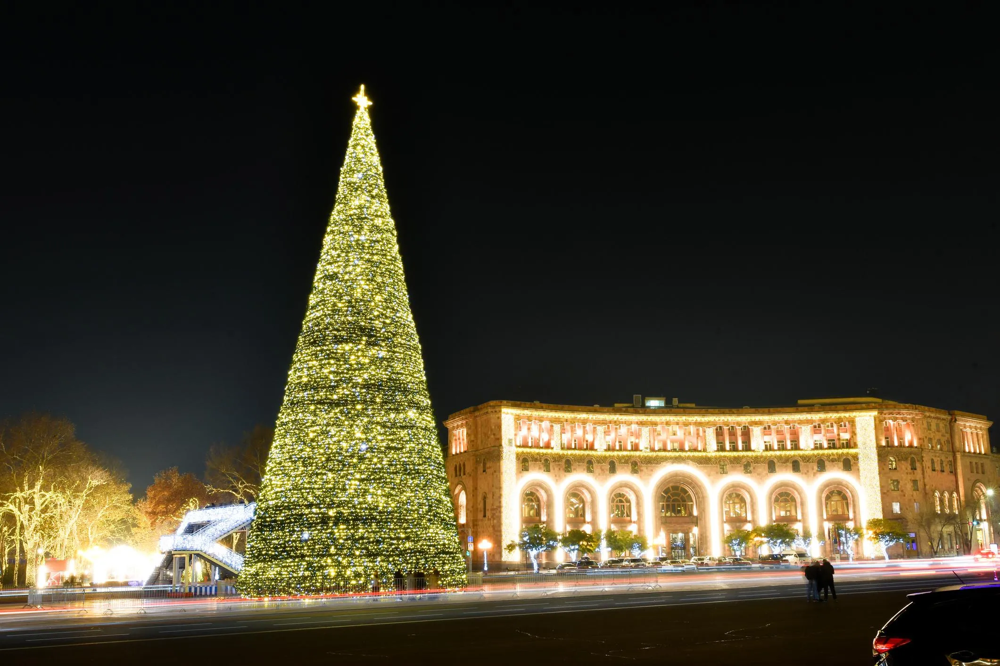
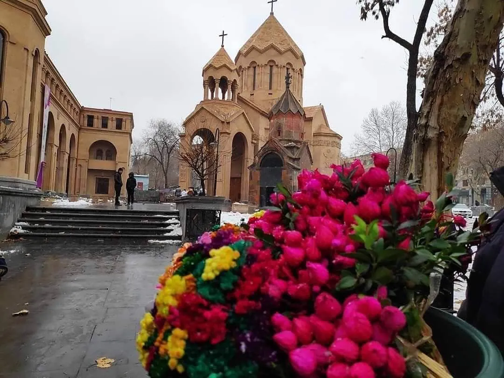
Գարուն
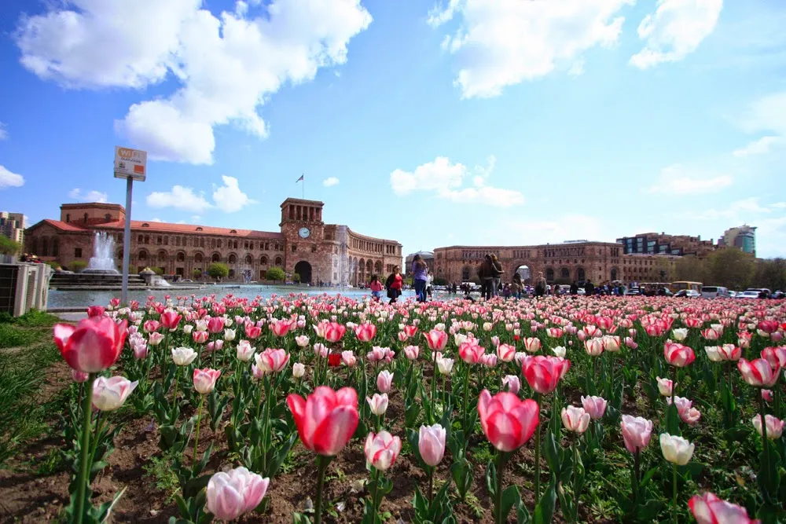
Գարունը սկսվում է մարտից և արագ տաքանում է։ Ապրիլին քաղաքը ծաղկում է՝ հատկապես ծիրանենիների շնորհիվ։ Եղանակը փոփոխական է՝ անձրևների և արևային օրերի հերթափոխով։
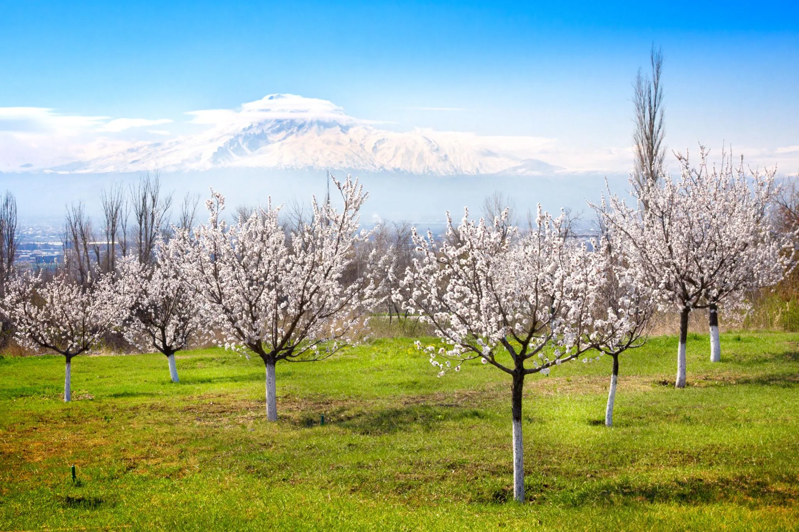
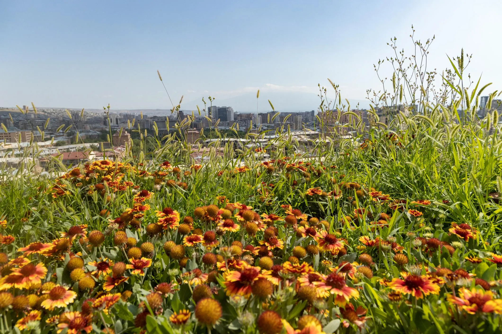
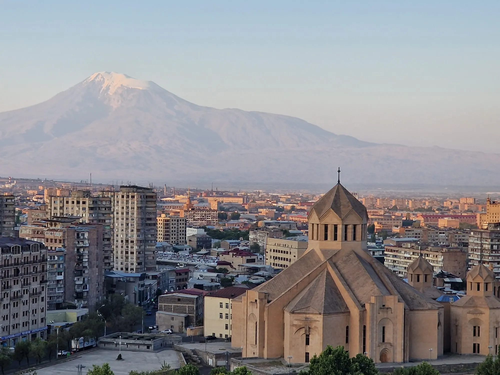
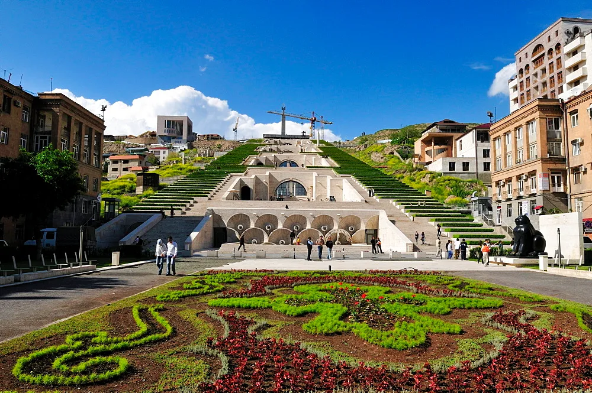
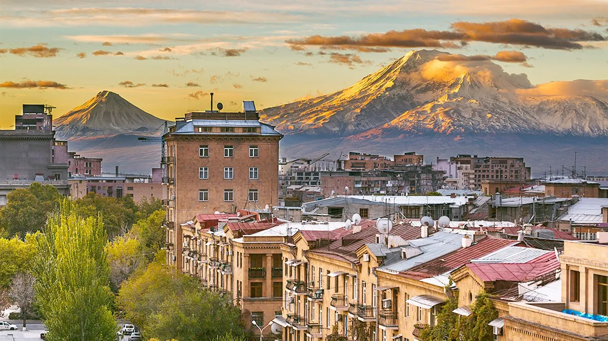
Ամառ
Ամառը շոգ է և չոր․ ջերմաստիճանը հաճախ հասնում է +36°C, երբեմն՝ մինչև +40°C։ Երեկոները ավելի զով են ու հաճելի։ Քաղաքային կյանքը ակտիվանում է գիշերային ժամերին։ Երեկոները զով են ու թարմացնող:
Աշուն
Աշունը մեղմ է ու երկարատև։ Մինչև նոյեմբեր պահպանվում է տաք եղանակ, իսկ քաղաքը դառնում է գունագեղ։ Տարվա ամենահարմարավետ եղանակն է զբոսաշրջության համար։
Տեղումներ
Տեղումների հիմնական մասը գալիս է գարնանը, մասամբ՝ աշնանը: Տեղումների սակավությանը զուգահեռ՝ շատ են արևային ժամերը, երկինքը պարզ է հիմնականում ամբողջ տարին։ Մառախլապատ կամ ամպամած եղանակը, հատկապես մայիս–սեպտեմբեր ամիսներին, հազվադեպ է:
Քամիներ
Քամիները հիմնականում չափավոր են, երբեմն՝ ուժեղ փչում են ամռանը։
Ջերմաստիճան
Միջինում՝ 22°C–36°C ամռանը, ձմռանը՝ մինչև -10°C նվազումներով:
Արևափայլ
Տարեկան արևային ժամերի քանակը բարձր է, երկինքը մեծ մասամբ պարզ է։ Երևանում արևափայլի տևողությունը հասնում է տարեկան մինչև 2700 - 2800 ժամի։ Ամենաարևոտ շրջանը հունիս-օգոստոս ամիսներն են, երբ արևոտ օրերի թիվը հասնում է առավելագույնի։Ուղիղ ճառագայթման բարձր տոկոսը պայմանավորված է չոր ցամաքային կլիմայով։